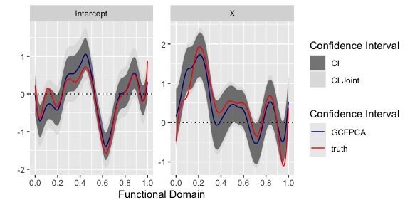
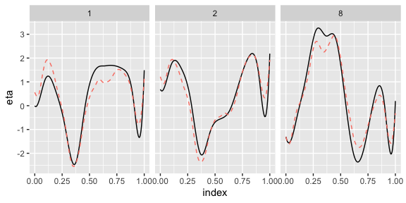
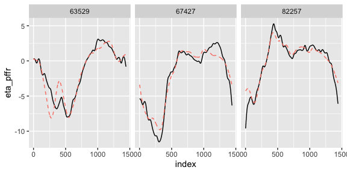
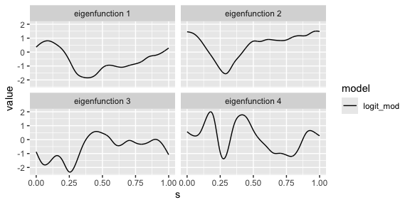

The GCFPCA package is for the joint modeling of the
fixed and random effects of non-Gaussian functional outcomes. This
vignette outlines the general functionality of the package. The main
function in the package is called gcfpca(). An additional
function called gcfpca_simu() can be used to simulate
binary, count, or normally distributed functional observations.
Currently, the package is designed to handle only dense functional data where each subject is observed on the same grid of regularly spaced points along the domain. In the future the package will be expanded to handle sparse and irregular functional observations.
The GC-FPCA model and algorithm
The model for generalized functional principal components analysis is
where is the observed data at time for subject , and are domain-varying coefficient, are mutually independent subject-specific scores, and are the eigenfunctions.
The GCFPCA package
A note on data formatting
Like most model-fitting functions in R, lmer takes as its first two
arguments a formula specifying the model and the data
with which to evaluate the formula. The formula use the same
format as required in lme4:lmer. Use of this package
requires that data be in a specific format: a long-form data
frame with variables id, index,
Y, and fixed effect predictors, where the Y
column contains functional observations for all subjects, the
id column identifies which observations belong to which
subject, and index provides the grid (domain) over which
the Ys are observed, and fixed effect predictors are not
domain-dependent, but only repeated for each time point.
The variable id should be a unique identifier in that
each id identifies a single subject. Since we assume there is only one
curve per subject for this package, id uniquely identifies
each curve as well. Other predictors can be included in the data as long
as the variables id, index, and Y
are present.
Simulate data for GC-FPCA
gcfpca_simu() generates curves with a population mean, a
fixed effect (binary or gaussian distributed)
functional principal components, and true eigenvalues
.
When function argument fe_case = 1, the fixed effect
predictor is
distributed. When fe_case = 2, the fixed effect predictor
is
distributed. When function argument re_case = 1, the true
eigenfunctions are periodic and defined by
.
When re_case = 2, eigenfunctions are non-periodic and given
by
The argument family defines the outcome distribution of
the observed data.The code below generates binary functional data with
subjects and
grid points with binary fixed effect predictor and periodic
eigenfunctions.
# simulate data
I = 100
K = 200
# simulate data and save results
set.seed(1134)
#set true fixed effects
theta_0 = rnorm(10 + 4, sd=1)
theta_1 = rnorm(10 + 4, sd=1)
#set true fixed effects
f_0 = function(s) bs(s, knots=seq(0.1, 0.9, len=10), Boundary.knots=c(0,1), intercept=TRUE) %*% theta_0
f_1 = function(s) bs(s, knots=seq(0.1, 0.9, len=10), Boundary.knots=c(0,1), intercept=TRUE) %*% theta_1
bin_sim <- gcfpca_simu(I = I, K = K, family = "binomial",
beta0_true = f_0, beta1_true = f_1)
ls(bin_sim)
#> [1] "df_gcfpca" "lambda" "phi" "scores"The resulting data object,simu_data, is a list with
values df_gcfpca, lambda, phi,
and scores. simu_data$df_gcfpca is a data
frame with variables id, index,
Y, and X, which is consistent with the format
our GCFPCA software requires. id is the
identifier for a particular subject, index represents the
functional domain point, the Y variable contains binary
observations, X is the subject-specific fixed effect
predictor.
Binary outcomes
gcfpca() is the main function for the
GCFPCA package. The key arguments for this function are
listed below.
-
formulaA formula specifying the GLMM model -
dataA data frame with columns:id(subject),index(time or index), andY(outcome variable). -
binwidthdetermines the width of bins. Should be a positive integer value of . -
npcindicates the number of functional principal components to use. The latter can also be chosen based on an explained share of variance, see argumentpve. -
familyis used to specify what type of exponential family functional distribution and link function you would like to use for your data. This parameter is fed to the the functionsglm::glmer()andmgcv::bam(); see the help files for these functions for which types of families and link functions are supported.
The following code uses a binomial family with logit
link.
# run fast gfpca model
bin_model <- gc_fpca(formula = Y ~ X + (1|id),
data = bin_sim$df_gcfpca,
binwidth = 10,
family = "binomial",
pve = 0.95, npc = 4)The plot below show the estimated fixed effect coefficients for the
logit binary FPCA models.
plot_df <- cbind.data.frame(sind = rep(seq(0, 1, length.out = K), 2),
betahat = c(data.matrix(bin_model$betaHat)),
betatrue = c(f_0(seq(0, 1, length.out = K)),
f_1(seq(0, 1, length.out = K))),
X = c(rep("Intercept", K),
rep("X", K)),
CI_L_pw = c(data.matrix(bin_model$CI_L_pw)),
CI_U_pw = c(data.matrix(bin_model$CI_U_pw)),
CI_L_joint = c(data.matrix(bin_model$CI_L_joint)),
CI_U_joint = c(data.matrix(bin_model$CI_U_joint))) %>%
mutate(X = factor(X, levels = c("Intercept",
"X")))
plot_df %>%
ggplot(aes(x = sind, y = betahat)) +
geom_ribbon(aes(ymin = CI_L_joint, ymax = CI_U_joint, fill = "CI Joint"), alpha = 0.5) +
geom_ribbon(aes(ymin = CI_L_pw, ymax = CI_U_pw, fill = "CI"), alpha = 0.5) +
geom_line(aes(color = "GCFPCA")) +
geom_line(aes(x = sind, y = betatrue, color = "truth")) +
scale_fill_manual(values = c("CI" = "black", "CI Joint" = "lightgray"), name = "Confidence Interval") +
scale_color_manual(values = c("GCFPCA" = "darkblue", "truth" = "red"), name = "Confidence Interval") +
# Adding a horizontal dotted line at y = 0
geom_hline(yintercept = 0, linetype = "dotted") +
# Setting x-axis labels to show time
scale_x_continuous(breaks = seq(0, 1, by = 0.2)) +
# Facet the plot by variable X, with 3 columns
facet_wrap(~X, ncol = 3, scales = "free_y") +
# Adding axis labels and title
labs(x = "Functional Domain", y = "", fill = "Confidence Interval")
The plot below show the estimated principal components for the
logit binary FPCA models.
flip_efunctions = function(data){
if(data[["logit_mod"]] %*% data[["truth"]] < 0){
data[["logit_mod"]] = -1 * data[["logit_mod"]]
}
data
}
phi_df = tibble(s = rep(seq(0, 1, length.out = 200), 4),
l = rep(paste0("eigenfunction ",1:4), each = 200),
truth = c(bin_sim$phi),
logit_mod = c(data.matrix(bin_model$efunctions[, -1]))) %>%
nest_by(l)
new_phi = map(phi_df$data, flip_efunctions)
phi_df$new_phi <- new_phi
phi_df %>%
select(-data) %>%
unnest(new_phi) %>%
ungroup() %>%
mutate(logit_mod = logit_mod * sqrt(200)) %>%
pivot_longer(truth:logit_mod, names_to = "model", values_to = "value") %>%
ggplot(aes(s, value, group = model, color = model, linetype = model)) +
geom_line() +
facet_wrap(~l)The plot below shows latent subject-specific means on the linear predictor scale, , for three subjects in the simulated Poisson dataset. True values are black solid lines while GCFPCA estimates are pink dotted lines.
bin_sim$df_gcfpca %>%
mutate(eta_hat = as.vector(bin_model$etas)) %>%
filter(id %in% c(1, 2, 8)) %>%
ggplot(aes(index, eta)) +
geom_line() +
geom_line(aes(y = eta_hat), linetype = 2, color = "salmon") +
facet_wrap(~id)
Poisson outcomes
The gcfpca() function can also perform Poisson GCFPCA on
count outcomes. The code below simulates Poisson functional data with
gaussian distributed fixed effect predictor and non-periodic
eigenfunctions, and performs Poisson GCFPCA.
# simulate data
library(splines)
I = 500
K = 1000
# simulate data and save results
set.seed(1134)
#set true fixed effects
theta_0 = rnorm(10 + 4, sd=1)
theta_1 = rnorm(10 + 4, sd=1)
#set true fixed effects
f_0 = function(s) bs(s, knots=seq(0.1, 0.9, len=10), Boundary.knots=c(0,1), intercept=TRUE) %*% theta_0
f_1 = function(s) bs(s, knots=seq(0.1, 0.9, len=10), Boundary.knots=c(0,1), intercept=TRUE) %*% theta_1
count_sim <- gcfpca_simu(I = I, K = K, family = "poisson",
beta0_true = f_0, beta1_true = f_1,
fe_case = 2, re_case = 2)
count_model <- gc_fpca(formula = Y ~ X + (1|id),
data = count_sim$df_gcfpca,
binwidth = 20,
family = "poisson",
pve = 0.95, npc = 4, periodicity = FALSE)The plot below show the estimated fixed effect coefficients for the poisson FPCA models.
plot_df <- cbind.data.frame(sind = rep(seq(0, 1, length.out = K), 2),
betahat = c(data.matrix(count_model$betaHat)),
betatrue = c(f_0(seq(0, 1, length.out = K)),
f_1(seq(0, 1, length.out = K))),
X = c(rep("Intercept", K),
rep("X", K)),
CI_L_pw = c(data.matrix(count_model$CI_L_pw)),
CI_U_pw = c(data.matrix(count_model$CI_U_pw)),
CI_L_joint = c(data.matrix(count_model$CI_L_joint)),
CI_U_joint = c(data.matrix(count_model$CI_U_joint))) %>%
mutate(X = factor(X, levels = c("Intercept",
"X")))
plot_df %>%
ggplot(aes(x = sind, y = betahat)) +
geom_ribbon(aes(ymin = CI_L_joint, ymax = CI_U_joint, fill = "CI Joint"), alpha = 0.5) +
geom_ribbon(aes(ymin = CI_L_pw, ymax = CI_U_pw, fill = "CI"), alpha = 0.5) +
geom_line(aes(color = "GCFPCA")) +
geom_line(aes(x = sind, y = betatrue, color = "truth")) +
scale_fill_manual(values = c("CI" = "black", "CI Joint" = "lightgray"), name = "Confidence Interval") +
scale_color_manual(values = c("GCFPCA" = "darkblue", "truth" = "red"), name = "Confidence Interval") +
# Adding a horizontal dotted line at y = 0
geom_hline(yintercept = 0, linetype = "dotted") +
# Setting x-axis labels to show time
scale_x_continuous(breaks = seq(0, 1, by = 0.2)) +
# Facet the plot by variable X, with 3 columns
facet_wrap(~X, ncol = 3, scales = "free_y") +
# Adding axis labels and title
labs(x = "Functional Domain", y = "", fill = "Confidence Interval")The plot below show the estimated principal components for the poisson FPCA models.
flip_efunctions = function(data){
if(data[["logit_mod"]] %*% data[["truth"]] < 0){
data[["logit_mod"]] = -1 * data[["logit_mod"]]
}
data
}
phi_df = tibble(s = rep(seq(0, 1, length.out = K), 4),
l = rep(paste0("eigenfunction ",1:4), each = K),
truth = c(count_sim$phi),
logit_mod = c(data.matrix(count_model$efunctions[, -1]))) %>%
nest_by(l)
new_phi = map(phi_df$data, flip_efunctions)
phi_df$new_phi <- new_phi
phi_df %>%
select(-data) %>%
unnest(new_phi) %>%
ungroup() %>%
mutate(logit_mod = logit_mod * sqrt(K)) %>%
pivot_longer(truth:logit_mod, names_to = "model", values_to = "value") %>%
ggplot(aes(s, value, group = model, color = model, linetype = model)) +
geom_line() +
facet_wrap(~l)The plot below shows latent subject-specific means on the linear predictor scale, , for three subjects in the simulated Poisson dataset. True values are black solid lines while GCFPCA estimates are pink dotted lines.
Real data
Here we subsetting the NHANES data to show an example of how to apply
our method on real life data. The processed single level NHANES physical
activity data can be found on the website of Functional Data Analysis
with R book website (https://functionaldataanalysis.org/dataset_nhanes.html).
This dataset is also included here in this packge as
nhanes_fda_with_r.rds.
We deleted all the missingness and subsetted 50 subjects to show our method.
df_long <- readRDS("../data/df_long.rds")First, we fit our GCFPCA model on the subsetted data. ${\rm logit}\{P\{Z_i(s)=1\}\} = \beta_0(s) + \beta_1(s) \text{Age}_i + \beta_2(s) \text{Gender}_i + \sum_{l=1}^{4} \xi_{il}\phi_l(s)$
gcfpca_start_t = Sys.time()
nhanes_gcfpca <- gc_fpca(formula = mims ~ age + gender +(1|id),
data = df_long,
binwidth = 30,
family = "binomial",
pve = 0.95, npc = 4, periodicity = TRUE)
gcfpca_end_t = Sys.time()
gcfpca_time_diff = as.double(difftime(gcfpca_end_t, gcfpca_start_t, units="mins"))
gcfpca_time_diff
#> [1] 27.92392Here we will compare our model with GFAMM (Scheipl et al., 2015,
2016) using pffr functions in refund package.
${\rm logit}\{P\{Z_i(s)=1\}\} = \beta_0(s) +
\beta_1(s) \text{Age}_i + \beta_2(s) \text{Gender}_i +
b_i(s)$
I = length(unique(df_long$id))
K = length(unique(df_long$index))
df_pffr <- data.frame(Y = I(matrix(df_long$mims, I, K, byrow=TRUE)),
id = factor(unique(df_long$id)),
age = df_long$age[!duplicated(df_long$id)],
gender = df_long$gender[!duplicated(df_long$id)])
pffr_start_t = Sys.time()
pffr_model <- pffr(Y ~ age + gender + s(id, bs="re"),
# use mgcv::bam with fastREML smoothing parameter
# selection to estimate the model
algorithm="bam", method="fREML", discrete=TRUE,
# specify the bases used for estimating f_0(s), f_1(s)
#via bs.int and bs.yindex, respectively
bs.yindex=list(bs = "cr", k=60),
bs.int=list(bs="cr", k=60),
data=df_pffr,
# specify outcome distribution and the functional domain (yind)
family="binomial", yind=1:1440)
pffr_end_t = Sys.time()
pffr_time_diff = as.double(difftime(pffr_end_t, pffr_start_t, units="mins"))
pffr_time_diff
#> [1] 5.53111
sind = 1:1440
df_pred <- data.frame("yindex.vec" = sind,
id = as.numeric(levels(df_long$id))[1],
age = 1, gender = 1)
betahat_pffr <- mgcv::predict.gam(pffr_model, newdata=df_pred, type='iterms', se.fit=TRUE)
CI_L_pffr <- betahat_pffr[[1]] - 1.96 * betahat_pffr[[2]]
CI_U_pffr <- betahat_pffr[[1]] + 1.96 * betahat_pffr[[2]]
eta_pffr <- matrix(pffr_model$linear.predictors, nrow = 50, ncol = 1440)The plot below show the estimated fixed effect coefficients of the
GC-FPCA and GFAMM models on the subsampled
NHANES dataset
plot_df <- cbind.data.frame(sind = rep(seq(0, 1, length.out = K), 3),
betahat = c(data.matrix(nhanes_gcfpca$betaHat)),
betahat_pffr = c(data.matrix(betahat_pffr[[1]][, -4])),
X = c(rep("Intercept", K),
rep("Age", K),
rep("Gender", K)),
CI_L_pw = c(data.matrix(nhanes_gcfpca$CI_L_pw)),
CI_U_pw = c(data.matrix(nhanes_gcfpca$CI_U_pw)),
CI_L_joint = c(data.matrix(nhanes_gcfpca$CI_L_joint)),
CI_U_joint = c(data.matrix(nhanes_gcfpca$CI_U_joint)),
CI_L_pffr = c(CI_L_pffr[, -4]),
CI_U_pffr = c(CI_U_pffr[, -4])) %>%
mutate(X = factor(X, levels = c("Intercept",
"Age",
"Gender")))
plot_df %>%
ggplot(aes(x = sind, y = betahat)) +
#geom_ribbon(aes(ymin = CI_L_joint, ymax = CI_U_joint, fill = "CI Joint"), alpha = 0.5) +
geom_ribbon(aes(ymin = CI_L_pw, ymax = CI_U_pw, fill = "CI"), alpha = 0.3) +
geom_ribbon(aes(ymin = CI_L_pffr, ymax = CI_U_pffr, fill = "CI pffr"), alpha = 0.5) +
geom_line(aes(color = "GCFPCA")) +
geom_line(aes(x = sind, y = betahat_pffr, color = "GFAMM")) +
scale_fill_manual(values = c("CI" = "blue", "CI Joint" = "lightblue", "CI pffr" = "pink"), name = "Confidence Interval") +
scale_color_manual(values = c("GCFPCA" = "blue", "GFAMM" = "red"), name = "Confidence Interval") +
# Adding a horizontal dotted line at y = 0
geom_hline(yintercept = 0, linetype = "dotted") +
# Setting x-axis labels to show time
scale_x_continuous(breaks = seq(0, 1, by = 0.2)) +
# Facet the plot by variable X, with 3 columns
facet_wrap(~X, ncol = 3, scales = "free_y") +
# Adding axis labels and title
labs(x = "Functional Domain", y = "", fill = "Confidence Interval")The plot below shows latent subject-specific means on the linear predictor scale, ${\rm logit}\{P\{Z_i(s)=1\}\} = \beta_0(s) + \beta_1(s) \text{Age}_i + \beta_2(s) \text{Gender}_i + b_i(s)$, for three subjects in the subsampled NHANES dataset. GFAMM estimates are black solid lines while GCFPCA estimates are pink dotted lines.
df_long %>%
mutate(eta_hat = as.vector(nhanes_gcfpca$etas)) %>%
mutate(eta_pffr = as.vector(eta_pffr)) %>%
filter(id %in% c(63529, 67427, 82257)) %>%
ggplot(aes(index, eta_pffr)) +
geom_line() +
geom_line(aes(y = eta_hat), linetype = 2, color = "salmon") +
facet_wrap(~id)
The estimates from GC-FPCA and GFAMM are
similar to each other for fixed effects and linear predictors.
The plot below show the estimated principal components for the GC-FPCA models.
phi_df = tibble(s = rep(seq(0, 1, length.out = 1440), 4),
l = rep(paste0("eigenfunction ", 1:4), each = 1440),
logit_mod = c(data.matrix(nhanes_gcfpca$efunctions[, -1]))) %>%
nest_by(l)
phi_df %>%
unnest(data) %>%
ungroup() %>%
mutate(logit_mod = logit_mod * sqrt(1440)) %>%
pivot_longer(logit_mod, names_to = "model", values_to = "value") %>%
ggplot(aes(s, value, group = model, color = model, linetype = model)) +
geom_line(color = "black") +
facet_wrap(~l)